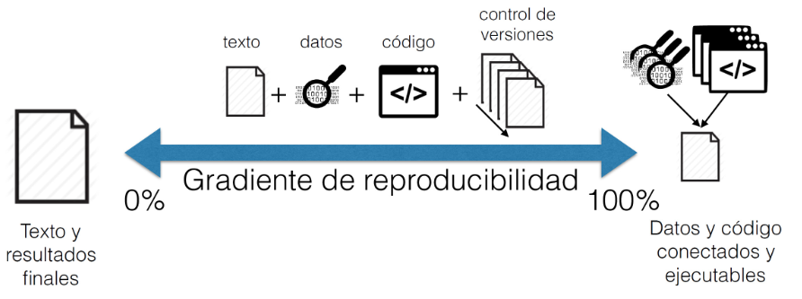
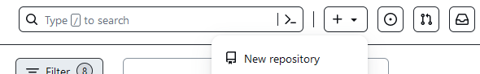
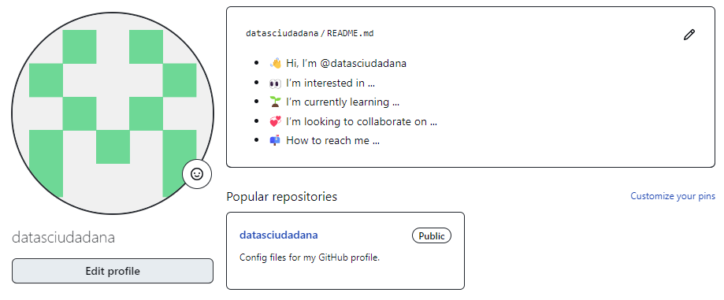
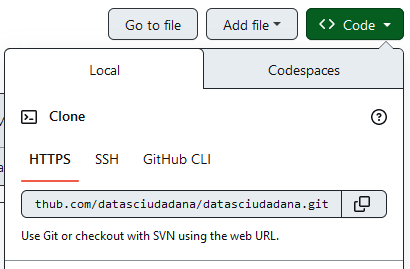
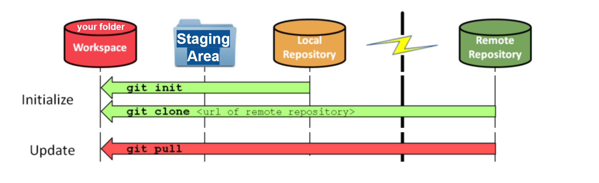
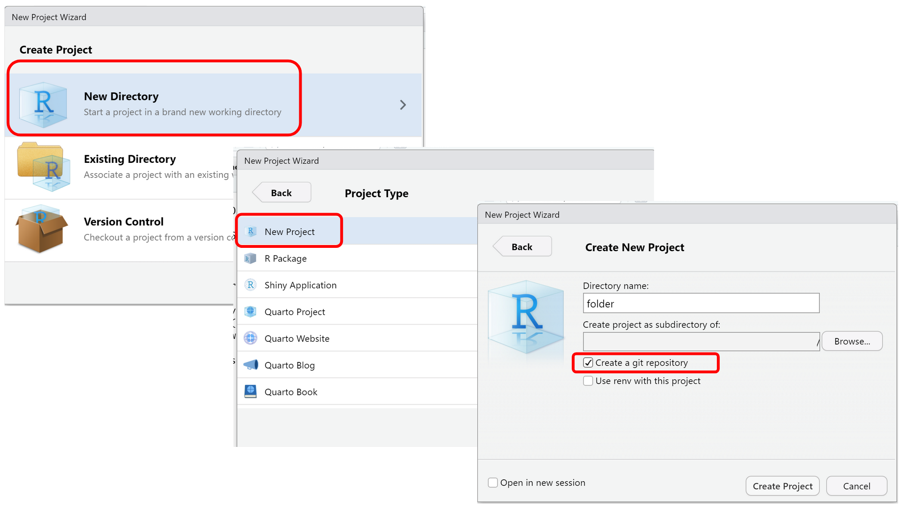
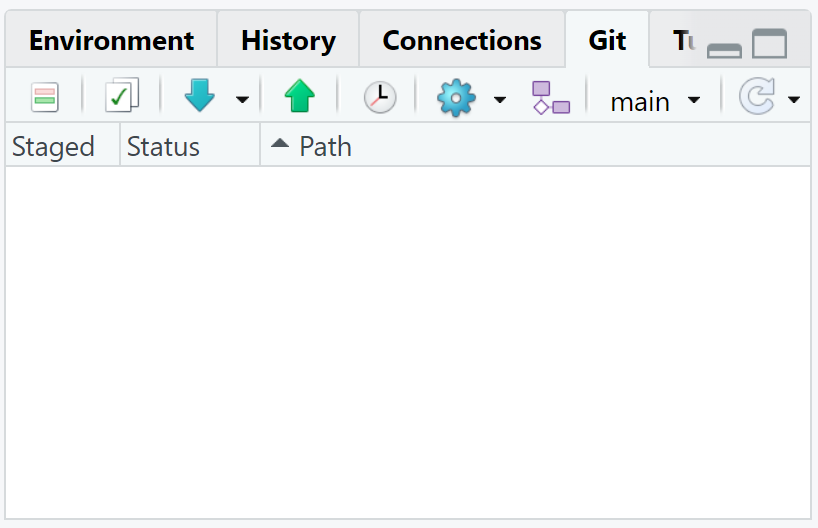
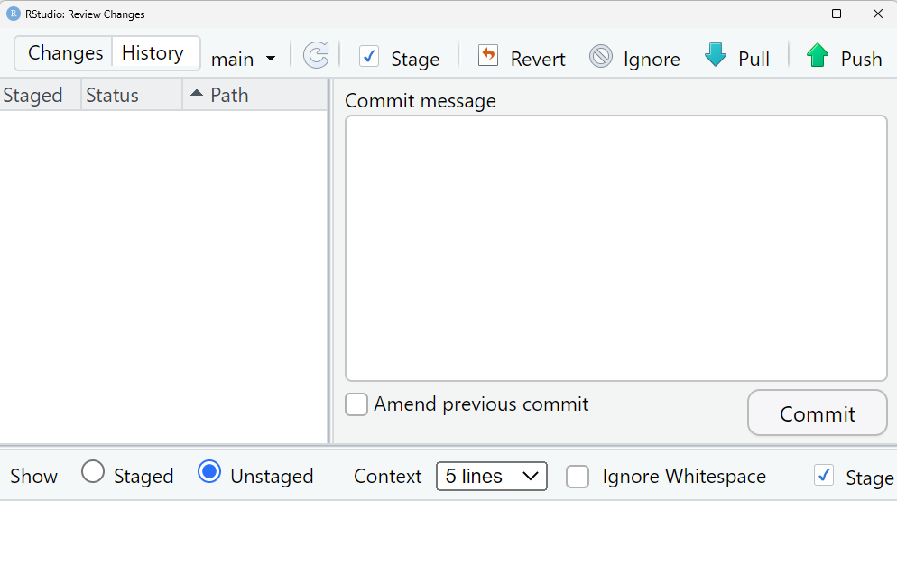
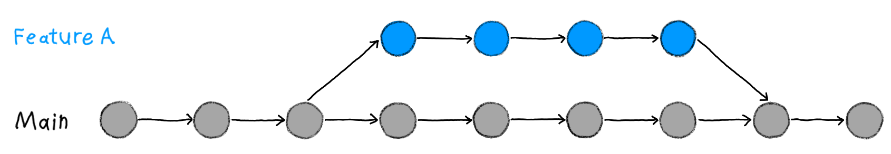

We can increase the reproducibility of our Open
science projects with version control sytems like Git. Text
and final results can be connected and executable by Data and code.
From: “Ciencia reproducible: qué, por qué, cómo” https://www.revistaecosistemas.net/index.php/ecosistemas/article/view/1178
Use git status to display the state of
the working directory and the staging area. git add your
changes before you git commit them to the Local repository.
Use the git log to get the history of changes in it. Use
git diff to compare these changes.
Use git diff to compare changes since
last commit or between commits. Use git checkout to undo
changes by restoring the staging area (committed changes) or the local
repository (last commit)
Image 1 of 1: ‘Creating a Repository on GitHub (Step 1)’

Figure 2
Image 1 of 1: ‘Creating a Repository on GitHub (Step 2)’
Figure 3
Image 1 of 1: ‘Creating a Repository on GitHub (Step 3)’
Figure 4
Image 1 of 1: ‘The Local Repository with Git Staging Area’
Figure 5
Image 1 of 1: ‘Freshly-Made GitHub Repository’
Figure 6
Image 1 of 1: ‘Where to Find Repository URL on GitHub’
Figure 7
Image 1 of 1: ‘GitHub Repository After First Push’
Figure 8
Image 1 of 1: ‘[decorative]’
Use git pull to download content from a
remote repository to the workspace and update the local repository to
match that content. Use git push to upload local repository
content to a remote repository.
Image 1 of 1: ‘screenshot of repository page with Settings then Collaborators selected, showing how to add Collaborators in a GitHub repository’
Figure 5
Image 1 of 1: ‘After Creating Clone of Repository’
In the Outbreak response scenario, now Wolfman has a
local copy of the remote repository. They are already set up to
collaborate for one project!
Figure 6
Image 1 of 1: ‘[decorative]’
Use git fetch to download the remote
content but not update your local repo’s working state, leaving your
current work intact. Use git pull to download the remote
content for the active local branch and immediately merge it. this can
potentially cause conflicts.
Figure 7

Figure 8
Figure 9
Figure 10

Figure 11
Image 1 of 1: ‘[decorative]’
Use git clone to obtain a development
copy of a remote repository. Like git init, cloning is
generally a one-time operation. Use git pull to update the
local repository to match the content in the remote repository.
Image 1 of 1: ‘RStudio screenshot showing the file menu dropdown with "New Project..." selected’
Figure 2
Image 1 of 1: ‘RStudio screenshot showing New Project dialog window with "Create project from existing directory" selected’
Figure 3

Figure 4
Figure 5
Figure 6
Image 1 of 1: ‘RStudio window after new project is created with large arrow pointing to vertical Git menu bar.’
Figure 7
Figure 8
Image 1 of 1: ‘RStudio screenshot showing the Git menu dropdown with "Commit..." selected’
Figure 9

Figure 10
Figure 11
Image 1 of 1: ‘RStudio screenshot showing the git menu dropdown with "History" selected’
Figure 12
Figure 13
Image 1 of 1: ‘RStudio screenshot showing .gitignore open in the editor pane with the files .Rproj.user, .Rhistory, .RData, and *.Rproj added to the end’
Figure 14

Figure 15
Image 1 of 1: ‘[decorative]’
One feature branch and one main branch in Git.